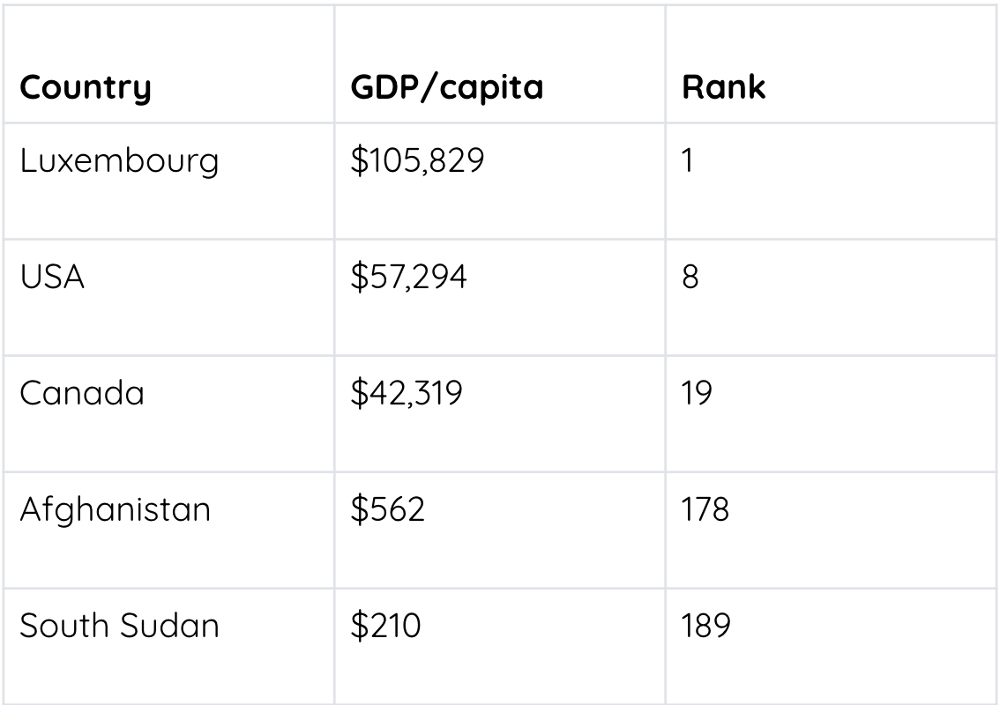

The Gross Domestic Product (GDP) has been used widely to measure economic well-being.
The Gross National Product (GNP) is another frequently mentioned measure of economic progress.The difference between GDP and GNP is the production boundaries used. GDP measures all goods and services produced in the country, whether by domestic or foreign companies. It excludes goods and services produced in other countries. GNP measures all production by domestic companies regardless of where in the world that production takes place. Because its boundaries coincide with those used to measure a country’s population and employment, GDP is more beneficial for setting domestic policies and evaluating programs. To simplify the discussion in this document, the term GDP will be used throughout this paper to refer to the measure of economic activity.
However, at times in the past, the actual measure used was GNP.2 Work by the US and UK Treasuries in the 1930s and 1940s was the foundation of NIPA and GDP methodologies. Since then, the work has been expanded on by many nations and has been formalized in the System of National Accounts 1993 documentation.3 Marcus, R.D. and R.E. Kane, U.S. National Income and Product Statistics: Born of the Great Depression and World War II. Bureau of Economic Analysis: Survey of Current Business, 2007: p. 32-46.4 United Nations Monetary and Financial Conference at Bretton Woods. Summary of Agreements. July 22, 1944. World War II Resources 1946 [online] 2008.
There is much economic activity that is not included in the calculation of GDP. Some of these omissions include:
Select each tab to learn more.
goods or services exchanged between family members because it just shifts purchasing power, for example, allowances or financial birthday gifts.
previously included in GDP calculations for the years they were produced.
e.g., housework, unpaid childcare, work of “do it yourselves.”
productive transactions that are unreported and thus left out of GDP. e.g., smuggling cigarettes when taxes were very high, transactions paid by cash, or barter. (You learned about the underground economy in Unit 2. In 2013, total underground activity was $45.6 billion in Canada or about 2.4% of GDP, according to Statistics Canada.)
New goods or services do not measure improvements in quality over time or products not previously available (such as fax, computers, etc.). With little or no increase in price, GDP only measures sales, not quality.
Per capita GDP refers to GDP divided by the population as though every individual received the same portion of income. However, individuals have far different living standards, depending on how income is distributed.
GDP does not measure or reflect economic well-being, which comes from decreased work and more leisure time to pursue interests or enjoyment.
GDP does not differentiate between economic activities that harm the economy, e.g., Exxon Valdez destroyed wildlife and the Arctic but produced substantial economic activity in cleaning it up.

Source:
Despite the limitations of using GDP as a measure of economic health, it continues to be used. This idea has been challenging, as you can see from the following sources.